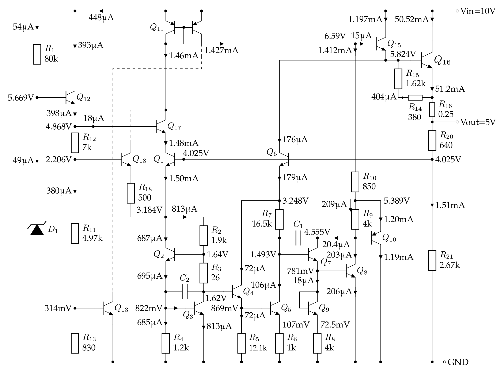
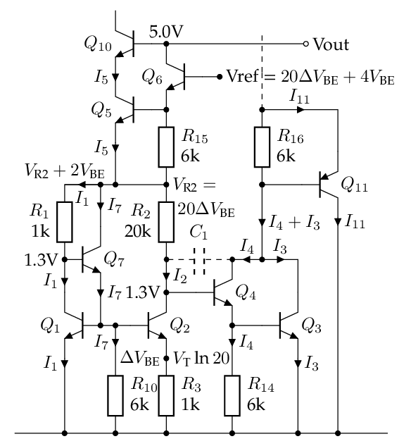

常用集成稳压芯片与电压基准
简史
1960s 分立器件。早期的功率三极管受半导体材料限制，PNP 型是锗管性能较好，NPN 型是硅管性能较好（beta 大、输出电流大、耐压高）。因此，硅集成电路上，以 NPN 管为主，而 PNP 管的 beta 只有几十。早年的功放推挽输出要靠 PNP 锗管和 NPN 硅管配对，比较难搞。
1968 年，Fairchild 上市 µA723，输出电流 150mA。根据 µA741 的发明人 Dave Fullagar 的说法，它是 Darryl Lieux 设计的。它内部是用 JFET 做了一个恒流源，驱动 Zener 二极管来获得电压基准 (7.15V)。它使用较为复杂、一般要接五六个外围阻容元件。如需大电流，还需要外接功率三极管。
1969 Robert Widlar (当时在 National 工作) 发明了 bandgap voltage reference，并为 National 设计了第一个集成 5V 三端稳压电路 LM109/LM309，设计思路、1971 年数据手册。输出电流达到 1A，说明温度系数很好。
1971 年 Fairchild 发布 µA7800 系列三端稳压电路，采用的是 4 Vbe 的基准。 有人推测是为了避免电路专利纠纷。
1972 年 National 发布 LM340-xx 系列三端稳压电路，后来改名为 LM78xx (估计是跟风 Fairchild)。 这个系列采用的是 3 Vbe 的基准，据说跟 LM109 的电路很相似，只是加了电阻分压反馈来获得 12V / 15V 的输出。Robert Widlar 1970 年 33 岁时从 National 退休，我猜他可能参与了 LM7805 的设计，但没有直接证据。
所以，从内部电路上看（存在多个修订版本，暂略），National 的 LM340-5.0 = 自家的 LM7805 != Fairchild 的 µA7805，尽管通常可以互换使用。国内仿制的 W7800 系列电路是参照 Fairchild 的 µA7805 设计，也是 4 Vbe 的基准。
TO-220 封装的 LM7805 的 pin 1 是输入，pin 2 是 GND，pin 3 是 5V 输出。 有一些旧的资料把 pin 2 和 pin 3 互换，我猜是 TO-3 金属封装的遗迹，因为金封 LM7805 的两个管脚是 Vin 和 Vout，而外壳接 GND，一般把金属外壳当作 pin 3，所以旧的资料说 pin 3 是 GND。
1976 Robert C. Dobkin 发明了 LM317，第一个可调三端稳压器件。 同年？Robert A. Pease 发明了 LM337，负电压可调三端稳压。
1978 TI 发布了可调电压基准 TL431。1977 年“预告”，1978 年上市。经典的开关电源控制芯片 TL494 是跟 TL431 是同年上市的。
LM7805 内部电路简析
https://www.righto.com/2014/09/reverse-engineering-counterfeit-7805.html
现在的 datasheet 没有具体参数(电阻阻值)，要看旧图。 即便如此，三极管的参数(beta、面积比)也无从得知。
78L05 的电路比 7805 要容易理解得多，建议从此入手。 μA78L05 内部电路的分析与仿真 https://chenshuo.github.io/notes/UA78L05
这是我仿真得到的 μA78L05 直流工作点：

LM7805 与 μA7805 内部电路的分析与仿真 https://chenshuo.github.io/notes/LM7805
这是我仿真得到的 μA7805 直流工作点：

这是用网上找的 SPICE 模型仿真的 LM7805 直流工作点：

一个猜想
从三极管的编号可以推测电路的设计过程。7805 是 1970 年左右设计的，当时可没有什么 EDA 软件。鼠标是 1968 年才发明，第一个图形界面的计算机是 1973 年上市（Xerox Alto），Unix 是 1974 年对外发布，SPICE 也是 1973 年发表第一版。所以我推测 7805 是手工计算+画图来设计的，设计步骤会以纸质文档的方式保存下来。那么更改三极管的编号就不是电子文档里“查找+替换”那么简单。所以三级管的编号一定程度上可以推测电路的设计过程，这里以 μA7805 的 bandgap 基准部分为例：我猜，一开始的设计是常规的 3 个三极管：

假设 ，那么 和 上的电压基本相等，所以 ，于是 上的电压 . 上的电压 .
随后发现可能 的增益不够，或者其他原因，需要加一个 做 Darlinton。这样一来， 集电极的电压就变成了 V，为了把 集电极的电压也升高为 ，就加入了 。然后为了释放 的发射极电流，又增加了 这个泻流电阻。同理， 是给 泻流用的。于是电路就变成了现在这个样子，三极管的编号也就这么确定下来了。

TL431
TL431 内部电路的分析与计算： https://chenshuo.github.io/notes/tl431
这是我仿真得到的 TL431 直流工作点：

我怀疑 TI 公布的内部电路留了一手，手册上给的内部电路参数可以符合直流和交流特性，但是不一定符合温度特性。
LM185
https://www.righto.com/2022/04/reverse-engineering-lm185-voltage.html
AD580
参考
-
Bob Pease "The Design of Band-Gap Reference Circuits: Trials and Tribulations", https://www.tayloredge.com/reference/Ganssle-Pease/bobpease-bandgap.pdf
-
1971 年 Fairchild Linear Integrated Circuits Data Catalog 出现了 μA7800
-
1972 年 National Semiconductor Linear Integrated Circuits 有 LM340，也就是后来的 LM7800
-
1974 年 Fairchild Voltage Regulator Applications Handbook 介绍了 μA7805 内部工作原理
-
1977 年 TI Voltage Regulator Handbook 宣布 TL431 即将上市
-
1977 年 Signetics Analog Data Manual
-
1980 年 National Semiconductor Voltage Regulator Handbook
-
Linden T. Harrison, Current Sources and Voltage References, 2005.